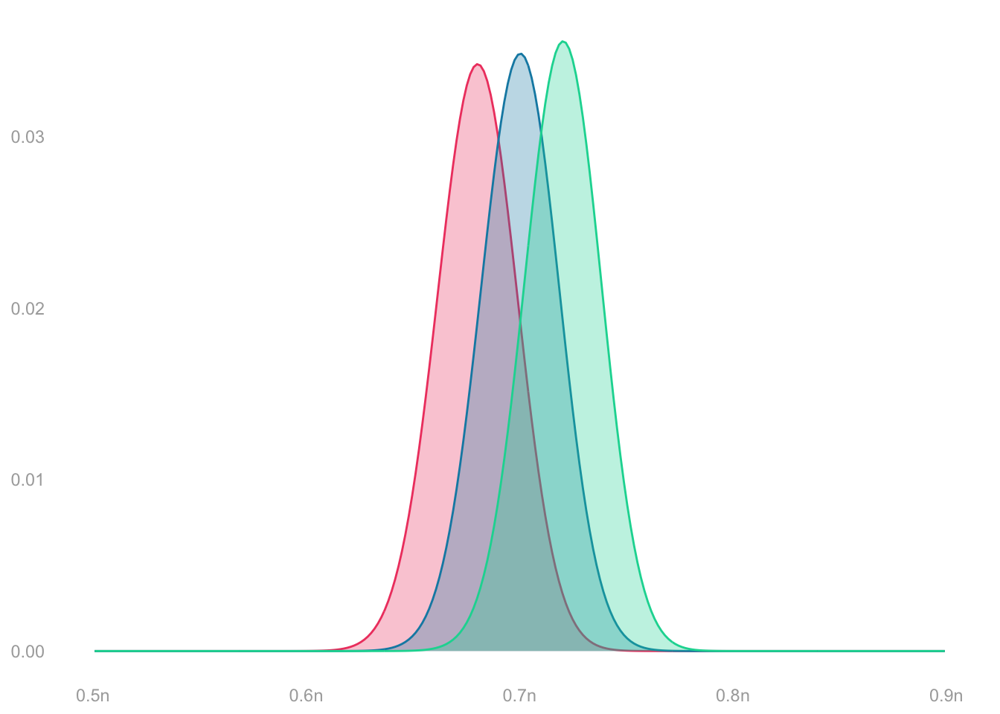
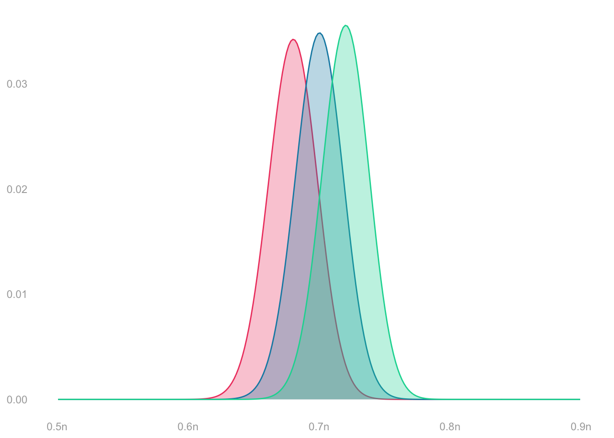

\[ \begin{aligned} &\overset{\color{gray}=P\qty(\frac{1}{n}\sum_{i=1}^n Y_i = \frac{s}{n})}{P\qty(\sum_{i=1}^n Y_i = s)} = \binom{s}{n} \theta_1^{s}\theta_0^{n-s} \\ &\qfor n =625 \\ &\qand \theta_1 \in \{\textcolor[RGB]{239,71,111}{0.68}, \textcolor[RGB]{17,138,178}{0.7}, \textcolor[RGB]{6,214,160}{0.72} \} \end{aligned} \]
These functions have ‘binom’ in their name because we call this distribution the Binomial distribution. The Binomial distribution on \(n\) trials with success probability \(\theta\) is our name for the distribution of the sum of \(n\) independent binary random variables with probability \(\theta\) of being \(1\). E.g. the number of heads in \(n\) coin flips is Binomial with \(n\) trials and success probability \(1/2\).
We’ve shown that’s the sampling distribution of the sum of responses, \(Y_1 + \ldots + Y_n\), when we sample with replacement from a population of binary responses \(y_1 \ldots y_m\) in which \(\theta\) is the frequency of ones. We’re interested in the mean of responses, so we divide by \(n\): \(\color{gray} \sum_{i=1}^n Y_i = s \ \text{ when } \ \frac{1}{n}\sum_{i=1}^n Y_i = s/n\).
It’s easy to estimate—and talk about estimating—this sampling distribution. It depends only on one thing we don’t know: the population frequency \(\theta\). And that’s exactly the thing we’re trying to estimate anyway. That’s why we’ve started here—the case of sampling with replacement from a population of binary responses.